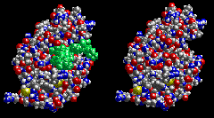

Energy, Enzymes, and Catalysis Problem Set
Problem 10 Tutorial: Enzyme features
Enzymes:
A. are composed primarily of polypeptides, which are polymers of amino acids. B. can bind prosthetic groups such as metal ions that participate in enzyme reactions. C. have defined structures. D. bind their substrates at active sites. E. all statements are true.
Features of enzymes and enzyme structure
| Enzymes are composed primarily of proteins, which are polymers of amino acids. Enzymes can bind prosthetic groups that participate in enzyme reactions. Prosthetic are not part of the enzyme polypeptide chain. Prosthetic groups can be metal ions or various types of organic compounds. Enzymes fold into defined, 3D conformations. The three dimensional structure of many enzymes has been determined. As an example, the defined structure of the enzyme lysozyme with a carbohydrate substrate bound to the active site is shown in the left panel of the figure. | |
| Enzymes bind their substrates at active sites. The active site is the location on the surface of the enzyme where the catalyzed reaction takes place. In the two views of lysozyme shown above, the left panel shows a carbohydrate colored green bound to the active site of lysozyme. The right panel shows the empty active site. Notice that the active site forms a cleft on the enzyme surface designed to specifically interact with the substrate. |  |


Department of Biochemistry and Molecular Biophysics
University of Arizona
Revised: October 2004
Contact the Development Team
http://www.biology.arizona.edu
All contents copyright © 1996. All rights reserved.